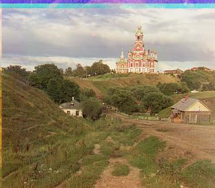

Here're the results. On the left side it's the baselines using naive search with SSD. In the middle is the result of applying pyramid search, with ssd for shift for each layer. On the rigthand side are the results after applying histogram equalization.
Approach: for the baselines, I used image pyramid with Euclidean Distance. As we can see, using only ssd results in similar performance when we're dealing with the smaller jpg images. However, when it comes to larger images like tif images, pyramid works a lot better, having fewer misalignments. I tried both using Euclidean Distance and NCC for calculating the best displacemnent for each layer, however, I realized later that the image accuracy is not as good when using NCC, which is why I chose Euclidean Distance in the end.
The search space for each layer is fixed: [-15, 15]. And I applied the best displacemnent I found from the courser layers as the starting point for the new search at finer layers.
I initially ran into a problem where the image displacemnent can be calculated, but the images for different channels don't quite align up with each other. Later I found out that it was a bug where I accidentally applied the shift for red channel to the green channel.
Also, initially the images didn't quite line up and there were thick black boarders around the image. This was resolved by cropping each image channel by 10% on each side to remove border so that the score on the border won't be 0 and therefore won't be taken into consideration.
Bells & Whistles: I applied histogram equalization, which performs global contrast enhancement by computing a histogram across all channels and making it so all intensities are as equally common as possible. All the images are aligned nicely and have all the colors for baseline and histogram equalization, except for emir.jpg. As we can see from the picture, the red channel is not aligned well enough. I suspected that the number of layers is too big such that it got confused at the beginning. Therefore, I decreased the layer number from the ogininal 6 to 3 and 4 for testing purposes. As we can see from the resulting image, there's no more significant color misalignments. This is the combination that works the best. I've also tried other approaches such as canny edge detector and using SSIM score. Neither of them performs well and are time consuming.
Cathedral


Left: r(12, 3), g(5, 2)
Middle and right: r(12, 3), g(5, 2)
Church
Left: r(30, -5), g(25, 4)
Middle and right: r(58, -4), g(25, 4)
Emir
Left: r(30, 30), g(30, 19)
Middle and right: r(26, -826), g(46, 24)
Emir processed with 3 (left) and 4 (right) pyramid layers
Left & right: r(103, 55), g(49, 24)
Harvesters
Left: r(30, 4), g(30, 17)
Middle and right: r(124, 13), g(59, 16)
Icon
Left: r(30, 23), g(30, 17)
Middle and right: r(89, 23), g(41, 17)
Lady
Left: r(30, -6), g(30, 9)
Middle and right: r(112, 11), g(51, 9)
Melons
Left: r(30, 11), g(30, 2)
Middle and right r(178, 13), g(81, 10):
Monastery
Left: r(3, 2), g(-3, 2)
Middle and right: r(3, 2), g(-3, 2)
Onion_church
Left: r(30, 30), g(30, 29)
Middle and right: r(108, 36), g(51, 26)
Sculpture
Left: r(30, -26), g(30, -11)
Middle and right: r(140, -27), g(33, -11)
Self_portrait
Left: r(30, 30), g(30, 26)
Middle and right: r(176, 37), g(78, 29)
Three_generations
Left: r(30, 9), g(30, 13)
Middle and right: r(112, 11), g(53, 14)
Tobolsk
Left: r(6, 3), g(3, 3)
Middle and right: r(6, 3), g(3, 3)
Train
Left: r(30, 30), g(30, 7)
Middle and right: r(87, 32), g(42, 5)
Example1
Left: r(11, -1), r(5, 0)
Middle and right: r(11, -1), g(5, 0)
Example2
Left: r(-4, 1), g(-3, 1)
Middle and right: r(-4, 1), g(-3, 1)
Example3
Left: r(13, 5), g(6, 3)
Middle and right: r(13, 5), g(6, 3)